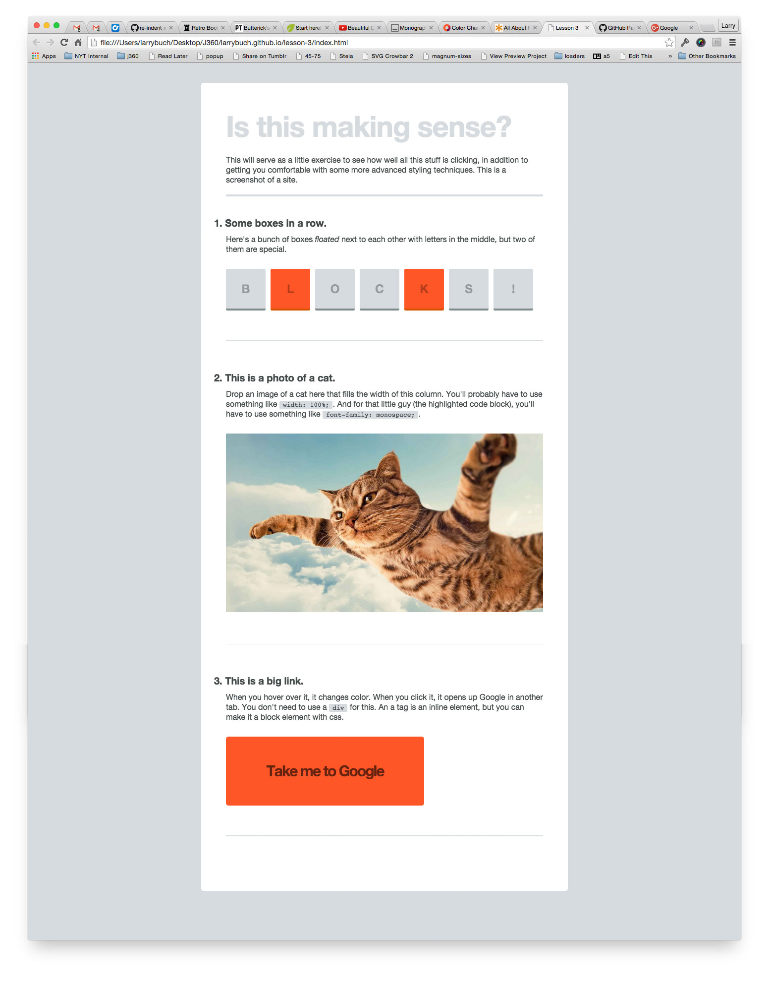

Lesson 5 — A Simple Assignment.
September 28.Just a code review with me.
Goal To think about how html is structured, and to start to apply more advanced css techniques.
due Your assignment is due Friday before midnight.
Lost? Drop any and all questions in Slack. I'll have office hours this week in the Google Hangout (just jump in, I'll be in there) from 7 to 8 p.m. on Wednesday and Thursday.
You might still be a bit confused, but I hope things are starting to click and you’ll be on your way to html/css jedi status faster than Donald Trump’s historic rise in the polls. What a guy.
The point was to start to get you thinking about how you can use different style properties to emphasize certain things. And how much you can actually do with design, even when I take away color, size, images and typefaces.
It’s not always about making things big and red. Although that does help sometimes.
This week, I’m going to go over some more advanced HTML and CSS techniques, and you’re going to replicate a screenshot I post from scratch.
I’ll provide the content, and you’ll need to create a new repo, set up your files, code up the HTML, and add style.
From now on, you’re in charge of the look, feel and content of your portfolio site. Each week, after you push up the project for that week, you should add it to your portfolio site as a link in your projects section somewhere with a date, title, and description.
1. Indent your code properly. Your html and css should be neat, clean and easily readable. You don’t want to develop messy habits with code. Your future self and co-workers will thank you. When your sites get longer and more complicated, and you forget one <, it’s a lot easier to find if your code is neat.
2. Always check your live site. Don’t just assume you published it.
3. Make the changes I suggest in your code, and commit and sync them. In web design and code the little things matter. Something as simple as an unclosed <a> tag will break everything, so fix the small stuff, and put what you changed in your commit message.
4. Paragraphs, spans, links, lists can all have classes and ids, not just divs. Only add divs and classes as need be for style purposes.
After you push up your new code, paste the url here. This site validates your code to make sure there are no errors. It will tell you if you have any tag misspellings, are missing any tags, forgot to close your </a> tag, whatever.
Additional links about things covered in the video.
Your assignment is to recreate this screenshot in code.
You can get a full-sized version by right clicking and opening the image in a new tab.
1. Create a new repo in the Github app. Call the repo ‘lesson–3’.
2. Create a blank index.html file.
3. Paste in the boilerplate junk. (You can find this in lesson 1, or write it from scratch, if you’d like).
4. Make a css folder.
5. Create and save a style.css file inside your css folder. Save a copy of the reset.css stylesheet inside your css folder.
6. Link up your reset.css and style.css files in the <head> of your html.
7. Type in some code and open your site in the browser to make sure everything is connected and working fine.
8. Figure out the structure for the html. Based on the screenshot, how would you structure this page in html? I’d diagram the structure on paper first. What’s your h1? What should be wrapped in a div? What classes should each element have, if any at all?
Here’s the content, so you don’t have to retype it.
Is this making sense?
This will serve as a little exercise to see how well all this stuff is clicking, in addition to getting you comfortable with some more advanced styling techniques. This is a screenshot of a site.
1. Some boxes in a row.
Here’s a bunch of boxes floated next to each other with numbers in the middle, but two of them are special.
B
L
O
C
K
S
!
2. This is a photo of a cat.
Drop an image of a cat here that fills the width of this column. You’ll probably have to use something like width: 100%;. And for that little guy, you’ll have to use something like font-family: monospace;.
3. This is a big link.
When you hover over it, it changes color. When you click it, it opens up Google in another tab. You don’t need to use a div for this. An a tag is an inline element, but you can make it a block element with css.
9. Once you have the structure down, start in on the style. I like to start broad, to narrow. What’s the fewest lines of code I can write to make this work?
10. When you’re ready to push things live, it’s a little different this time. In the github app you’ll need to commit and sync your changes like normal to the master branch, but they won’t show up anywhere live because this is a new repo, not linked to your portfolio site. After you commit and sync your changes to master, we need to create a new branch in the github app called gh-pages. Then commit and sync your changes to the gh-pages branch and check the url http://your-github-username.github.io/lesson–3. Your site should show up there.
11. Validate your html to make sure don’t have any code errors. If you do, fix them locally, make sure things look ok, then push your changes to master and gh-pages.
12. I think that’s all. Good work!
To think about grids, how they're structured, how they help, and how they can give form to content.
Thinking about how html is structured, and to start to apply more advanced css techniques.
By the end of this lesson, you’ll have turned your portfolio site into a minimalist masterpiece.
By the end of this lesson, you’ll have a website live on the internet. No training wheels.
Thanks for enrolling in this course. The Internet is a fun place, so this should be fun.